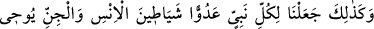
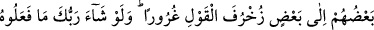

Ona: “Ey delikanlı! Allah aşkına bana esas yaşını söyle.” dedim.
– “On iki” dedi. Sonra ondan ricâ ettim, arkadaşlarıma yetişmem için dua etti.
Arafat’da vakfeden sonra Harem’e vardık. Bir de baktım ki o genç Kâbe’nin örtülerine
sarılmış ağlıyor ve duâ ediyordu. Sonra secdeye kapandı, öldü ve Allah’ın rahmetine
kavuştu. Daha sonra onu rüyada gördüm ve ona:
– “Rabb’in sana ne yaptı?” diye sordum. “Beni huzurunda durdurdu ve “Senin arzun
nedir?” diye sordu. Ben de:
– “İlâhım, efendim, benim arzum sensin.” dedim. Allah Teâlâ bana:
– “Sen benim gerçek bir kulumsun. Benim huzurumda senin istediğini vermemek
olmaz.” buyurdu. Ben de:
– “Ey Rabb’im, beni asrımdaki insanlara şefaatçi kılmanı istiyorum.” dedim. O da:
– “Seni bu hususta şefâatçi kıldım.” buyurdu. Daha sonra delikanlı benimle musafaha
etti. Musâfaha ettikten sonra uyandım. Etrafımda gördüğüm herkes bana:
– “Ey İbrahim! Elinden gelen kokunun güzelliği insanları mest etti!” diyordu.
Ravilerinden birisi bu kokunun İbrahim (rh.a.) ölünceye kadar elinden gitmediğini
söyler.
112. Böylece biz, her peygambere insan ve cin şeytanlarını düşman kıldık.
(Bunlar), aldatmak için birbirlerine yaldızlı sözler fısıldarlar. Rabbin dileseydi onu
da yapamazlardı. Artık onları uydurdukları şeylerle başbaşa bırak.
“Böylece biz,” Ebû Cehil ve diğer Kureyş kâfirlerini sana düşman kıldığımız gibi
senden önceki “her peygambere insan ve cin şeytanlarını düşman kıldık.” Burada
Rasûlullah (s.a.) teselli edilmiştir. Müşriklerin düşmanlığı ve o düşmanlığın neticesi
olan yalan söz ve bâtıl fiilleri sadece O’na (a.s.) mahsus değildir. Bilakis onun ve
ümmetinin, düşmanların hileleri ile imtihan olundukları gibi önceki bütün peygamber ve
ümmetleri de imtihandan geçirilmişlerdir.
“İnsan ve cin şeytanları”ndan kasıt, bu iki toplumun azgınlarıdır.
Şeytan, insan ve cinlerden azgın ve sapık olanların tümü için kullanılır. Cinlerden
olan şeytan bir müslümanı yoldan çıkarmaktan aciz kalırsa, insanlardan olan bir azgın
kimseye gider ve mü’mini fitneye düşürmesi için onu teşvik eder.
Malik b. Dînar’ın şöyle dediği nakledilmiştir: “İnsanlardan olan şeytanlar benim için
cinlerden olan şeytanlardan daha tehlikelidir. Çünkü cinlerden olan şeytanlardan
Allah’a sığınırsam kaçar giderler. Ama insan şeytanları göz göre göre gelip beni